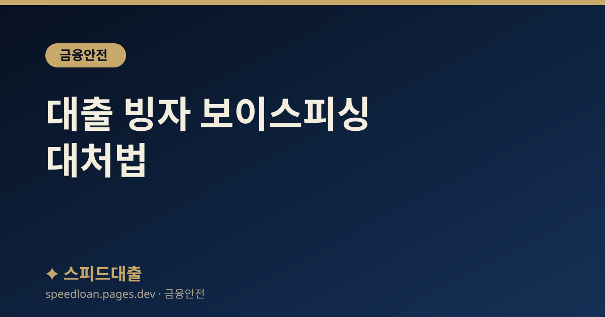

대출 빙자 보이스피싱 대처법
저금리 대출을 미끼로 접근하는 보이스피싱·스미싱 수법과, 피해 발생 시 즉시 할 조치를 안내합니다.

대출 빙자 사기의 전형적 시나리오
'기존 대출을 저금리로 갈아타게 해 주겠다', '정부 지원 대출 대상자로 선정됐다'며 접근한 뒤, 기존 대출 상환금이나 보증금·수수료를 특정 계좌로 먼저 보내라고 요구하는 것이 대표적인 수법입니다. 은행 직원이나 금융감독원 직원을 사칭해 그럴듯한 서류나 앱 화면을 보여 주기도 합니다.
이들은 피해자가 의심할 틈을 주지 않으려고 '지금 입금하지 않으면 대출이 취소된다', '이미 신용조회가 되어 다른 대출을 받으면 불법이 된다'는 식으로 심리적 압박을 가합니다. 때로는 여러 명이 역할을 나누어 은행 상담원, 금융감독원 직원, 검찰 수사관을 차례로 연기하며 상황을 진짜처럼 꾸미기도 합니다.
그러나 정상적인 금융회사는 대출 실행을 조건으로 현금을 먼저 요구하지 않고, 공공기관은 전화로 계좌이체나 앱 설치를 지시하지 않는다는 점만 기억해도 대부분의 사기를 걸러낼 수 있습니다. 통화 중 조금이라도 이상하다면 일단 전화를 끊고, 해당 기관의 공식 대표번호로 직접 확인하는 것이 가장 안전합니다.
이런 요구는 사실상 사기입니다
- 대출을 위해 '기존 대출을 먼저 갚아야 한다'며 현금이나 계좌이체를 요구하는 경우
- 보증료·전산작업비·신용등급 상향 비용 등 명목으로 선입금을 요구하는 경우
- 특정 앱(원격제어 앱 등) 설치나 휴대폰 화면 공유를 요구하는 경우
- 보안카드 전체 번호, OTP 번호, 비밀번호, 인증번호를 알려 달라고 하는 경우
- 현금을 직접 인출해 특정인에게 전달하거나 무인 입금기에 넣으라고 지시하는 경우
피해가 발생했다면 즉시 할 일
이미 송금했다면 시간이 곧 회수 가능성입니다. 아래 순서대로 최대한 빠르게 조치하세요. 사기 계좌에 돈이 남아 있는 동안 지급정지가 이루어지면 환급 절차를 밟을 수 있습니다.
- 송금 직후라면 즉시 은행 고객센터 또는 경찰 112에 '지급정지'를 신청합니다.
- 금융감독원 1332(보이스피싱 통합 신고)와 경찰 112에 피해 사실을 신고합니다.
- 온라인으로는 경찰청 사이버범죄 신고시스템(ECRM)을 통해서도 신고할 수 있습니다.
- 인증번호나 비밀번호를 알려 줬다면 해당 계정 비밀번호를 즉시 변경합니다.
- 악성 앱을 설치했다면 휴대폰을 초기화하고 공인된 백신으로 점검합니다.
- 개인정보가 넘어갔다면 어카운트인포(계좌정보통합관리)로 내 명의 계좌·대출을 점검합니다.
- 필요하면 명의도용 방지 서비스와 여신거래 안심차단 서비스를 신청해 추가 대출을 막습니다.
스미싱 문자, 이렇게 구별하세요
요즘은 전화뿐 아니라 문자 메시지(스미싱)로 접근하는 사례도 많습니다. '정부 지원 대출 신청', '저금리 대환 대상자 안내'처럼 그럴듯한 문구와 함께 링크를 보내, 그 링크로 악성 앱을 설치하게 하거나 가짜 사이트에 개인정보를 입력하게 만드는 방식입니다.
문자에 담긴 링크는 겉보기에 진짜 기관 주소와 비슷해 보여도 실제로는 다른 경우가 많으므로, 아래 기준으로 걸러 내는 것이 안전합니다.
- 출처가 불분명한 문자 속 링크는 누르지 않고, 앱은 공식 스토어에서만 내려받습니다.
- '대출 승인', '한도 상향'처럼 즉시 클릭을 유도하는 문구일수록 의심합니다.
- 기관을 사칭한 듯하면 문자 번호가 아니라 공식 대표번호로 직접 확인합니다.
- 가족·지인을 사칭해 급하게 송금을 요구하는 문자도 반드시 전화로 본인 확인을 합니다.
혹시 링크를 눌렀거나 앱을 설치했다면, 아직 정보를 입력하지 않았더라도 안심하지 말고 휴대폰을 점검하는 것이 안전합니다. 이미 개인정보나 인증번호를 입력했다면 즉시 관련 금융사에 알리고 비밀번호를 변경한 뒤, 금융감독원 1332에 신고해 대응 방법을 안내받으세요.
추가 피해를 막는 예방 습관
한 번 정보가 유출되면 명의도용 대출 같은 2차 피해로 이어질 수 있으므로, 사후 조치와 함께 예방 장치를 걸어 두는 것이 좋습니다. 신용평가사의 명의도용 방지 서비스나 여신거래 안심차단 서비스를 신청해 두면 본인 몰래 대출이 실행되는 것을 예방하는 데 도움이 됩니다.
또한 어카운트인포(계좌정보통합관리)로 내 명의의 계좌와 대출을 주기적으로 점검하면, 모르는 사이에 개설된 계좌나 대출을 조기에 발견할 수 있습니다. 무엇보다 출처가 불분명한 대출 권유 문자·전화에는 응답하지 말고 삭제하는 습관이 중요합니다. 거래 전에는 반드시 금융소비자정보포털 '파인'에서 제도권 금융회사인지 확인하세요.
자주 묻는 질문
이미 돈을 보냈는데 되찾을 수 있나요?
즉시 지급정지를 신청하고 112·1332에 신고하면, 사기 계좌에 돈이 남아 있는 경우 환급 절차를 밟을 수 있습니다. 다만 시간이 지날수록 인출되어 회수가 어려워지므로 최대한 빨리 조치하는 것이 중요합니다.
금융감독원이나 검찰이라며 전화가 왔습니다. 진짜일까요?
공공기관이 전화로 계좌이체나 현금 전달, 앱 설치를 요구하는 일은 없습니다. 이런 요구를 받으면 통화를 끊고, 해당 기관의 공식 대표번호로 직접 전화해 사실을 확인하세요. 금융 관련이면 금융감독원 1332로 문의할 수 있습니다.
악성 앱을 깔았는지 어떻게 알 수 있나요?
출처 불명의 링크로 받은 앱을 설치했다면 이미 위험할 수 있습니다. 통화가 이상하게 가로채지거나 화면이 임의로 조작되는 느낌이 든다면 즉시 데이터를 백업한 뒤 휴대폰을 초기화하고, 공인된 백신으로 점검하는 것이 안전합니다. 초기화 뒤에는 금융 계정 비밀번호도 함께 변경하는 것이 좋습니다.
지인이 대신 돈을 보내라고 부탁받았다는데 어떻게 하나요?
사기범이 제3자를 '전달책'으로 이용하는 경우가 있어, 모르고 가담하면 본인도 피해와 책임에 휘말릴 수 있습니다. 조금이라도 이상하면 송금이나 현금 전달을 멈추고 112·1332에 먼저 확인하세요. 또한 대출 광고 문자에 적힌 번호도 사기범이 임의로 넣은 것일 수 있으니, 관심 있는 금융사가 있다면 공식 홈페이지나 대표번호로 직접 연락하는 것이 안전합니다.
공식 참고 기관
본 사이트의 콘텐츠는 아래 공공·공식 기관의 공개 자료를 참고하여 작성하며, 구체적인 조건과 최신 제도는 해당 기관에서 직접 확인하시기 바랍니다.
본 사이트는 대출을 직접 제공하거나 중개하지 않으며, 금융상품 가입을 권유하지 않습니다. 모든 정보는 일반적인 참고용이며, 실제 대출 가능 여부, 한도, 금리, 조건은 금융회사 심사와 개인 신용상태에 따라 달라질 수 있습니다.